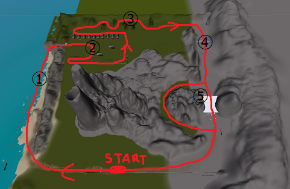

ゲームセンターへ｜ＴＯＰへ
遊び方
このゲームはRACING ISLANDという島をいかに早く一周できるかを競うレーシングゲームです。
以下、操作方法
←→キー…方向転換
↑キー…加速
↓キー…ブレーキ
Tキー…タイトルへ移動
コース説明

これがコースの全体像です。上手く進みましょう。
以下、コースのポイント説明。
①…まずはスタート直後森を抜けて海岸や浅瀬を疾走します。最後に待ち構える急カーブには要注意。
②…柵でカクカクと曲がった道になっている平原。Uカーブはなかなかの曲者。
③…緑のプチ迷路。角も多いし見失わないように気を付けて。
④…ジャンプ台。一方通行になってるしまさか逆走するなんて考えるなよ～？
⑤…ここで二つに分岐、最後の関門。まっすぐ行くルートは距離は短いけれど障害物がたくさん！一方右折ルートは距離は長く急カーブをしなければいけないが障害物がない。しかも距離が長いから逆に上手く操作すれば加速も狙える。どっちの道を選ぶかもここは腕の見せ所。
ちなみにどこかにショートカットがあるとかないとか…？